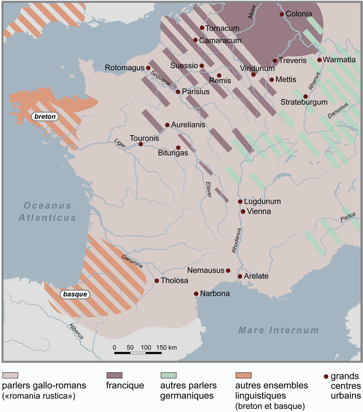
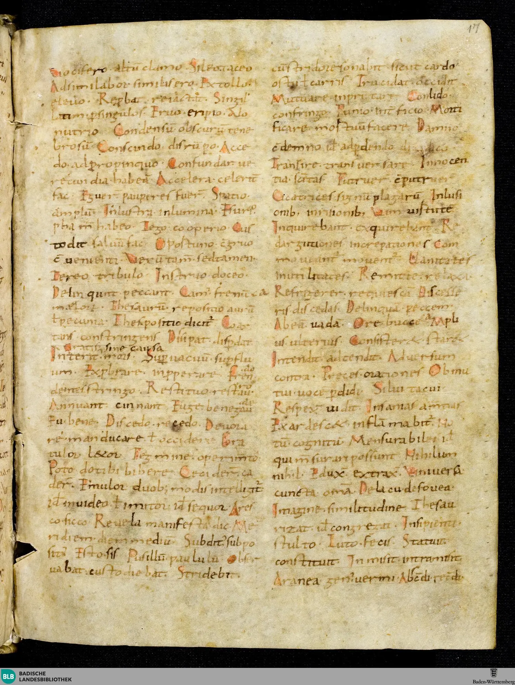
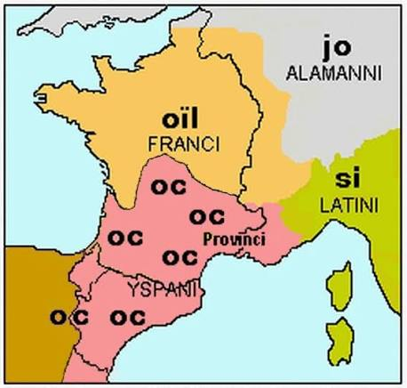
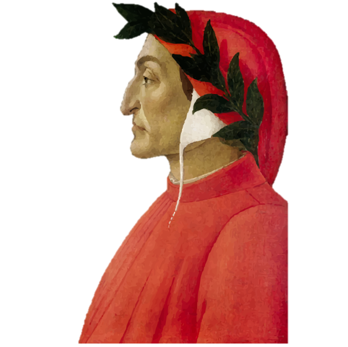
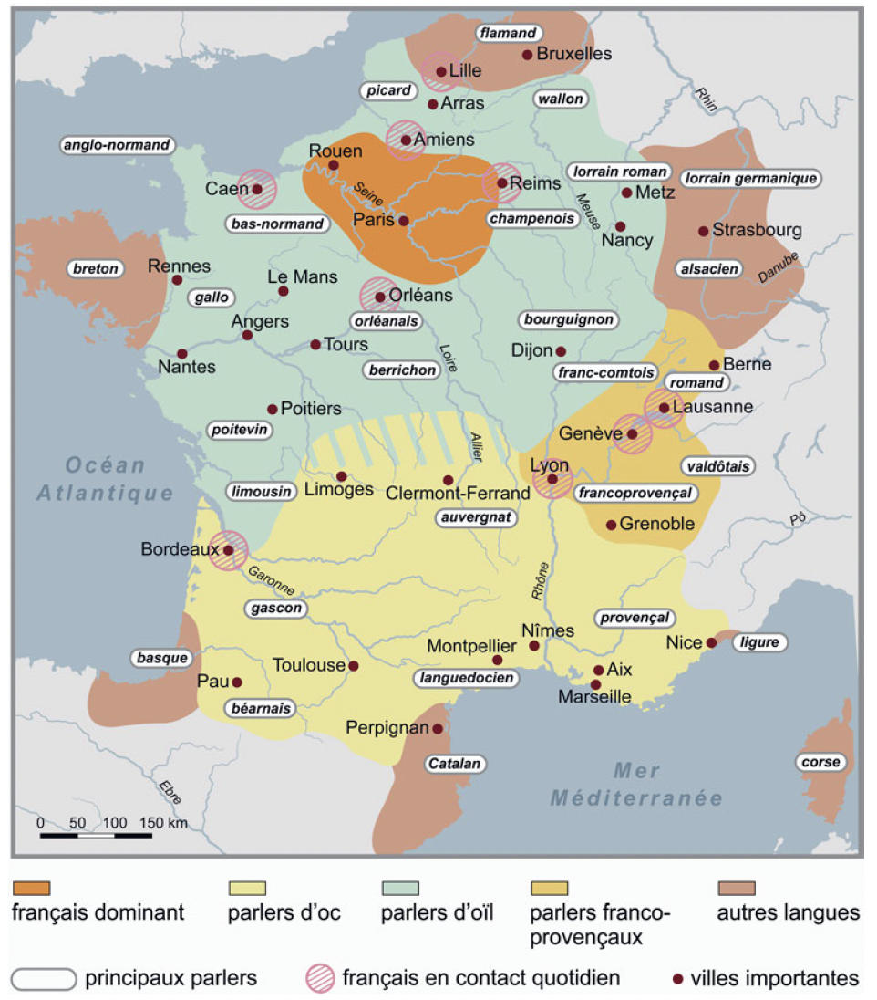
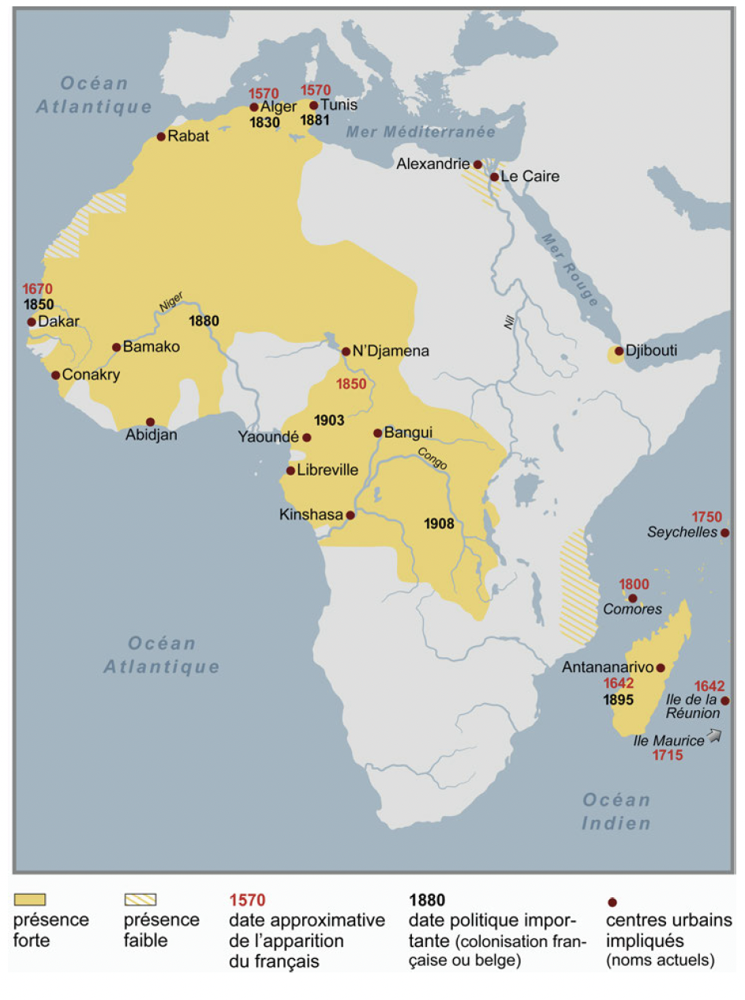
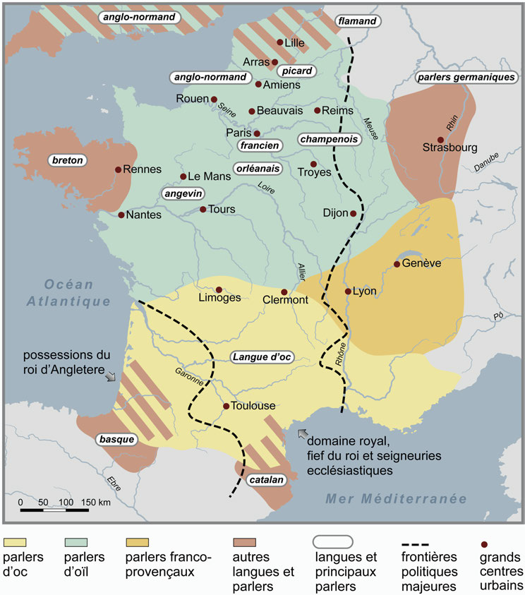

3 Notions de linguistique historique
- Notion introduite par Brunot
L’histoire du français, ce sera donc d’une part l’histoire du développement qui, de la langue du légionnaire, du colon ou de l’esclave romain, a fait la langue parlée aujourd’hui par un faubourien, un « banlieusard », ou écrite par un académicien. Nous appellerons cette histoire-là, l’histoire <span class=“fragment highlight-red”>interne</span>. L’histoire de la langue française, ce sera d’autre part l’histoire de tous les succès et de tous les revers de cette langue, de son extension en dehors de ses limites originelles – si on peut les fixer. Nous appellerons cette partie l’histoire <span class=“fragment highlight-red”>externe</span> (Ferdinand Brunot 1905 : t. I, Préface, p. V).

reprise et étendue par Saussure
« est interne tout ce qui change le système à un degré quelconque », Saussure (1989 : 59)
3.1 Facteurs « externes » à prendre en considération
d’après le Cours de Saussure ?
Données géographiques, démographiques, historiques (modification des frontières, etc.), sociales, culturelles, pratiques, matérielles
Interventions extérieures sur les parlers : décisions politiques, administratives, modification des codes, du statut des parlers, réformes
Modifications introduites dans les parlers par l’existence du fait variationnel :
Les différents types de variation, du point de vue de l’appréciation concrète de leurs poids respectifs
L’opposition langue commune / langues de spécialité
Les phénomènes de standardisation et de déstandardisation
Contacts avec d’autres parlers ou idiomes
Niveaux d’usage du point de vue des locuteurs : colinguismes, plurilinguismes, diglossies
Rôle des supports (formes d’oral, formes d’écrit)
Rôle des facteurs de conscience et de transmission :
Les textes métalinguistiques
Les modes d’enseignement et leur changement
Transmission verticale / horizontale
Niveaux d’usage dont la nature et la hiérarchie diffèrent selon les époques
3.2 Des périodisations différentes entre linguistique interne et externe ?
But : présenter une histoire (du français) et ses différentes périodes
Mais est-ce que cette périodisation doit correspondre en tout point à la périodisation des historiens ?
3.2.1 En linguistique interne
- Les linguistes ont pour habitude de regrouper un cumul signifcatif de traits linguistiques pour distinguer différentes périodes présentant une certaine cohérence et durant laquelle la langue aurait franchi une étape
| Ferdinand Brunot | Jacques Chaurand (1999) |
|---|---|
| Le Moyen Age | Le plus ancien français |
| Le seizième siècle | L’ancien français (12e-13e s.) |
| La langue classique | Le moyen français |
| Le dixhuitième siècle | Le français classique et post-classique |
| L’époque romantique | Le français d’hier |
| La deuxième moitié du dix-neuvième siècle | Le français d’aujourd’hui |
- Ou une périodisation davantage basée sur une histoire essentiellement interne de la langue
| Périodisation systématisée |
|---|
| Très ancien français |
| Ancien français |
| Moyen français |
| Français pré-classique |
| Français classique |
| Français post-classique |
| Français moderne |
| Français contemporain |
Mais quand est-ce qu’un changement devient important ?
Phonétique ?
Phonétique + morphologie ?
Phonétique + morphologie + syntaxe ?
etc.
Les critères de délimitation?
Définition des bornes :
- Première occurrence d’un phénomène VS sa généralisation dans la langue.
- Identification du domaine linguistique aux évolutions les plus décisives (phonétique, syntaxe, morphologie).
Divergences sur les bornes du « Moyen Français »
| Linguiste(s) | Période attribuée |
|---|---|
| Wartburg (1934) | 13ᵉ, 14ᵉ et 15ᵉ siècles |
| Caput (1972), Wolf (1979) | 14ᵉ et 15ᵉ siècles |
| Nyrop (1899-1930), Chaurand (1969) | 14ᵉ, 15ᵉ et 16ᵉ siècles |
| Vossler (1913) | 1270 – 1498 |
| Brunot & Bruneau (1937) | 1285/1304 – 1476/1482 |
| Picoche & Marchello-Nizia (1994) / Guiraud (1963) | 1352 – 1605 |
Dans le fond, on essaye de répondre aux mêmes questions à propos du changement linguistique : quelles sont les zones touchées et à quel moment ? Est-il rapide, lent ? Et pourquoi ?
3.2.2 En linguistique externe
On peut juger qu’un certain nombre de faits relevant de l’histoire externe peuvent malgré tout présenter un caractère démarcatoire :
- Événements politiques et démographiques :
- Invasions germaniques (5ᵉ-6ᵉ s.)
- Décolonisation
- Évolutions technologiques et supports :
- Invention de l’imprimerie
- Avènement du support numérique
- Statut, fonctions et enseignement :
- Abandon du latin dans certaines fonctions discursives
- Apparition d’un enseignement de masse du français en français
- Expansions géographiques et culturelles :
- Diffusion du français hors de ses domaines d’origine (via la culture ou la colonisation)
mais ces événements sont difficilement datables
et si on choisit une date symbole, face à une date symbole
Faire coïncider des périodisations en histoire interne et des périodisations en histoire externe est risqué
au final: souvent des compromis (#🇧🇪) à visée pédagogique
3.3 Depuis quand parle-t-on français ?
16 siècle:
XVIᵉ siècle (point de rupture) : Émergence d’un sentiment d’unité du « français » et apparition de la notion moderne de « langue ».
Avant le XVIᵉ siècle : Bien que le mot langue (lingua) et ses adjectifs soient fréquemment employés pour désigner des idiomes, leur sens reste complexe et difficile à interpréter selon nos critères actuels.
3.3.1 À l’époque classique
- À l’époque classique, les expressions lingua latina et lingua romana sont utilisées de manière interchangeable et s’opposent à la lingua barbara.
3.3.1.1 Invasion des Francs
- Glissement sémantique : Ce qui est « roman » commence alors à désigner ce qui vient ou ce qui se situe au sud de la Loire, par opposition au nord des Francs.
on oppose maintenant la lingua thioistica à laingua romana
Apparition des formules vernaculaires (début IXᵉ – début XIIᵉ s.)
Des formules « vulgaires » ou « vernaculaires » apparaissent de plus en plus au sein du latin écrit.
Outre la graphie, la phraséologie évolue (comme le montrent les Gloses de Reichenau, composées vers 750).
Des mots et expressions sont mis en regard comme synonymes, montrant que le latin écrit devient perméable à des formes perçues comme non latines.
On peut choisir d’appeler rétrospectivement « roman » l’ensemble des résultats de ces mélanges.
Interpénétration des cultures et Concile de Tours (VIIIᵉ – Xᵉ s.)
L’interpénétration des cultures langagières romaine et germanique constitue un paramètre essentiel.
Le Concile de Tours (813, canon 17) : Demande aux prédicateurs de traduire leurs homélies latines :
« Que chacun s’efforce de traduire (transferre) clairement ces dites homélies en latin des illettrés (in rusticam romanam linguam) ou en germanique (thiotiscam) afin que tous puissent plus facilement comprendre ce qui est dit. »
La réforme carolingienne et la prise de conscience (Nord vs Sud)
La réforme carolingienne du latin : Ce purisme avant la lettre exige des copistes qu’ils se rapprochent des règles des grammairiens, ce qui a pour effet d’éloigner la physionomie écrite du latin des lettrés de ce nouveau vernaculaire aménagé.
Prise de conscience (VIIIᵉ – Xᵉ s.) : Le mot latin est désormais réservé aux usages de l’élite lettrée et de l’Église. Le roman se reconnaît à une graphie, un vocabulaire, une morphologie et une syntaxe différents.
Différenciation géographique :
La France du Nord est le premier endroit où cette différenciation apparaît.
La France du Sud, l’Italie et l’Espagne (dépourvues de pouvoir centralisateur fort et non soumises aux influences germaniques) connaissent une prise de conscience plus tardive (entre le IXᵉ et le XIᵉ s.).
Évolution des termes franceis, francique et gallicus
L’adjectif franceis
Attesté pour la première fois dans la Chanson de Roland (entre 1086 et 1095).
Désigne ce qui est relatif à la France (en latin tardif Francia), la région du nord de la Loire où se sont installés les Francs. En latin médiéval, on disait franciscus.
À la fin du XIXᵉ s. (1872), des linguistes ont créé le mot francique à partir de franciscus pour désigner les dialectes germaniques occidentaux ayant transmis de nombreux mots au français.
L’équivalence avec gallicus
Sur le plan linguistique, franceis (franses en d’oc) traduit plutôt
gallicus(lingua gallica, gallice, idioma gallicum, loqui gallicum), qui sont des expressions plus anciennes.Exemple historique (995) : Lors du synode de Mouzon (près de Sedan), l’évêque Aymon prononce son sermon en « français » (gallice concionatus est), très probablement le dialecte d’oïl local.
Évolution au XIIᵉ s. : L’emploi de franceis pour désigner une variété de langue (et non plus seulement la région) date de la fin du XIIᵉ s. environ. Il renvoie la plupart du temps aux parlers d’oïl en général, comme chez Wace dans le Roman de Rou (1160–1170) ou Chrétien de Troyes dans Lancelot (1176–1181).
Aujourd’hui, la signification de l’expression « parler français » comporte des implications très différentes selon les contextes :
Un cadre institutionnel fort : En France, l’article 2 de la Constitution précise depuis 1992 que « La langue de la République est le français ». L’influence de l’idéologie du standard, largement renforcée par l’institution scolaire, maintient une représentation d’homogénéité malgré les variations réelles.
L’impact sur les représentations locales : Au début du XXᵉ siècle, il n’était pas rare que des locuteurs patoisants déclarent parler « français » lorsqu’on leur demandait de nommer leur langue d’usage, ce qui illustre le poids de ces représentations symboliques.
3.4 Quelques repères historiques, démographiques et géographiques
3.4.1 Le substrat latin et la dialectalisation
3.4.1.1 Il était une fois
Premières langues parlées sur le territoire actuel de la France
Hypothèses très fragiles
Langue non indo-européennes
Basque
Langues ibériques
3.4.1.2 Expansion des peuples indo-européens (6000 av. J.-C.)
peuples à la recherche de nouvelles terres agricoles
importe de nouvelles langues
Par exemple, au sud:
3.4.1.2.1 Les Ligures
les suffixes gallo-romans en -ascus, comme dans Manosque
calanque, avalanche

3.4.1.3 Importance des Grecs en Méditerrannée (600 av. J.-C.)
- quelques toponymes, mais pas plus
TipDéfinition
Toponyme :Nom de lieu.
3.4.1.4 Invasion des Celtes (500 av. J.-C.)
Invasion celte la plus massive vers 500 av. J.-C.)
Mélange de population avec les Ibères
3.4.1.4.1 Les Gaulois
les noms en -dun, comme Verdun, les noms en Ar-, comme Arles
vocabulaire de la nature (chamois, chêne)
de l’agriculture (soc, charrue, boue)
des armes (lance, glaive)
une numérotation vicésimale (quatre-vingts)
.gif)
3.4.1.5 Colonisation romain (150 av. J.-C.)
Gaule transalpine (vs cisalpine)
début en 150 av. J.-C. par la région de Narbonne
provincia d’où vient le nom provence
Histolf
Trois gaules (Belgique, Aquitaine et Celtique/Lyonnaise)
59 -51 avec Jules César et sa Guerre des Gaules ou Bellum Gallicum
Romanisation politique & culturelle –> romanisation linguistique
Entièrement romanisée en 51 avant notre ère, seul subsiste un petit bastion de résistance en Bretagne
La langue gauloise a pu persisté en parallèle du latin jusqu’au Ve, VI voir peut-être 7e sicèle
Mais s’arrête petit à petit avec la christianisation qui se fait bel et bien en latin
La diglossie entre gaulois vernaculaire et latin véhiculaire a pu perduré assez longtemps
- le gaulois perdure surtout dans des régions éloignées (Auvergne et Alpes)
TipDéfinitions
Diglossie : Situation linguistique d’un groupe humain qui pratique deux langues en leur accordant des statuts hiérarchiquement différents.
Vernaculaire : du pays, propre au pays
Véhiculaire : qui sert aux communications entre des communautés de langue maternelle différente
3.4.1.6 Division du latin
latin écrit bien normé
latin parlé cultivé
latin parlé populaire, sermo rusticus
manducare, ‘mastiquer’, remplace edere, ‘manger’
testa, ‘le tesson de poterie’, remplace caput, ‘la tête’
Changements phonétiques : la perte de l’opposition entre voyelles longues et brèves
Appendix Probi
Liste rédigée par un professeur d’école du Ve s.
aqua non acqua
auris non oricla
calida non calda
columna non colomna
oculus non oclus
speculum non speclum
februarius non febrarius
masculus non masclus
vetulus non veclus
lancea non lancia
favilla non failla
Hercules non Herculens

3.4.1.7 Dialectalisation
dialectalisation différentiée selon les régions
Narbonnaise : conservation d’un fond lexical latin qu’on retrouve en occitan
Acquitaine : imprégnation latine faible, au profit du basque
Auvergne : aux pratiques linguistiques traditionnelles dans le domaine administratif
début de la dialectalisation vers le 5e, mais plus complète au 8e siècle
Peu d’informations (et documents) sur cette période
3.4.2 Influences précoces
3.4.2.1 Influence germanique
dejà en 250 les Alamans et les Francs mettent en danger le limes romain
germanophones s’installent en Gaule (surtout après victoire sur Probus)
plusieurs vaguent de peuplement entre le 3e et 6e siècle
franc saliens occupent partie basse rive gauche dur hin
franc rhénans sur partie droite
burgondes au centre
ostrogoth sud-est
wisigoth dans Languedoc et sud-ouest
465, clovis roi des francs installe royaume au nord de la france actuelle
le royaume s’étend de plus en plus (souvent avec l’aval de l’élite gallo-romaine)
démographiquement les francs restent minoriatires (5% ?) –> la langue majoritaire reste le latin
le francique disparaît durant le 7e sicèle et ils adoptent le latin (aussi comme langue religieuse)

Évolution de [w] en gutturale (sur mots germaniques et latins) :
Francique werra > guerre
Latin uastare > gâter
Diphthongaison : suraccentuation de la voyelle tonique.
Suffixes adjectivaux / nominaux : -ard (ex. campagnard, de hard), -er, -ier, -and, -ais, -aud.
Préfixe : mé- / més- (ex. mésestimer).
suffixes verbaux en en -ir (ex. choisir).
Terminaison -ons de la 1ʳᵉ personne du pluriel.
Lexique
Guerre et armes : épieu, hache.
Couleurs : bleu, blanc, gris, brun.
Vie quotidienne & vêtements : écharpe, gant.
Agriculture & nature : blé, bois, forêt.
Institutions & noblesse : baron, marquis, fief.
Sentiments : orgueil, honte, haïr.
Adverbes : trop.
760, l’ancien royaume des francs passe aux mains de charlemagne
charlemagne de langue francique rhénan
ambition de restaurer l’empire romaine redonne importznce au latin
Trop tard, le changement du latin parlé mérovingien en proto-français s’était pratiquement achevé

Gloses de Reichenau (Fin du VIIIᵉ siècle)
Listes d’équivalences rédigées probablement en Picardie pour aider les moines à lire le latin classique de la Vulgate.
L’un des premiers témoins écrits de la perte de compréhension du latin classique, devenu une langue savante nécessitant un dictionnaire.
Exemples de substitutions lexicales :
singulariter → solamente
oves → berbices (« brebis »)

Concile de Tours (813)
- Reconnaissance officielle : La lingua romana rustica (roman parlé) est déclarée langue de prédication pour les homélies à côté de la lingua teudisca (germanique)
Coexistence des deux langues
illustrée par les Serments de Strasbourg ou l’Histoire des fils de Louis le Pieux de Nithard (842)
Texte en latin + version en “tudesque” + version en parler “roman”

Traité de Verdun (843)
Empire de Charlemagne divisé entre ses trois fils
Francie orientale : surtout parlers germaniques
Lotharingie : parlers germaniques au nord et romans au sud
Francie occidentale : réalité composite mais frontière entre les parlers ayant subi l’influence germanique au nord (les dialectes d’oïl) et les autres (les dialectes d’oc).
Note
Aujourd’hui, on parlerait plutôt de langues vernaculaires.
Nous parlons de langues qui se sont développées à partir du latin classique, mais qui ne lui ressemblent plus.
De vulgari eloquentia, de Dante Alighieri.


3.4.2.2 Influence celtique
Entre 450 et 650, des peuplements cetltes venus de grand-bretagne installe le Breton en Armorique
peu d’influence sur les parlers romans (gallo) et français
3.4.3 Dialectalisation romane
3.4.3.1 Séquence de sainte Eulalie (881)
Premier texte littéraire dans une langue romane (>< latin)
variété est du nord, picarde ou wallone, avec peut-être des influences du champenois et du lorrain.
articles
voyelles diphtonguées
1e attestation du conditionnel
| Texte en roman | Adaptation française |
|---|---|
| Buona pulcella fut Eulalia. | Une bonne jeune-fille était Eulalie. |
| Bel auret corps bellezour anima. | Belle de corps, elle était encore plus belle d’âme. |
| Voldrent la ueintre li d[õ] inimi. | Les ennemis de Dieu voulurent la vaincre, |
| Voldrent la faire diaule servir | Ils voulurent la faire servir le Diable. |
| Elle nont eskoltet les mals conselliers. | Mais elle, elle n’écoute pas les mauvais conseillers : |
| Quelle d[õ] raneiet chi maent sus en ciel. | Qui veulent qu’elle renie Dieu qui demeure au ciel ! |
| Ne por or ned argent ne paramenz. | Ni pour de l’or, ni pour de l’argent ni pour des parures, |
| Por manatce regiel ne preiement, | Pour les menaces du roi, ni ses prières : |
| Niule cose non la pouret omq[ue] pleier. | Rien ne put jamais faire plier |
| La polle sempre n[on] amast lo d[õ] menestier. | Cette fille à ce qu’elle n’aimât toujours le service de Dieu. |
| E por[ ]o fut p[re]sentede maximiien. | Pour cette raison elle fut présentée à Maximien, |
| Chi rex eret a cels dis soure pagiens. | Qui était en ces jours le roi des païens. |
| Il[ ]li enortet dont lei nonq[ue] chielt. | Il l’exhorte, ce dont peu ne lui chaut, |
| Qued elle fuiet lo nom xr[ist]iien. | À ce qu’elle rejette le nom de chrétienne. |
| Ellent adunet lo suon element | Alors elle rassemble toute sa détermination |
| Melz sostendreiet les empedementz. | Elle préférerait subir les chaînes |
| Quelle p[er]desse sa uirginitet. | Plutôt que de perdre sa virginité. |
| Por[ ]os furet morte a grand honestet. | C’est pourquoi elle mourut en grande bravoure. |
| Enz enl fou la getterent com arde tost. | Ils la jetèrent dans le feu afin qu’elle brûlât vite : |
| Elle colpes n[on] auret por[ ]o nos coist. | Comme elle était sans péché, elle ne se consuma pas. |
| A[ ]czo nos uoldret concreidre li rex pagiens. | Mais à cela, le roi païen ne voulut pas se rendre : |
| Ad une spede li roueret tolir lo chief. | Il ordonna que d’une épée, on lui tranchât la tête, |
| La domnizelle celle kose n[on] contredist. | La demoiselle ne s’y opposa en rien, |
| Volt lo seule lazsier si ruouet krist. | Toute prête à quitter le monde à la demande du Christ. |
| In figure de colomb uolat a ciel. | C’est sous la forme d’une colombe qu’elle s’envola au ciel. |
| Tuit oram que por[ ]nos degnet preier. | Tous supplions qu’elle daigne prier pour nous |
| Qued auuisset de nos Xr[istu]s mercit | Afin que Jésus Christ nous ait en pitié |
| Post la mort & a[ ]lui nos laist uenir. | Après la mort et qu’à lui il nous laisse venir, |
| Par souue clementia. | Par sa clémence. |
3.4.3.2 Invasions vikings
à partir du 9e siècle, plusieurs vagues d’invasions de peuples parlant le norroi
911, Charles le Simple, leur concède un territoire qui deviendra la Normandie
Les habitants délaissent leur langue (néanmoins parlée jusqu’au 12e s.), mais le français a quand même hérité quelques toponymes et termes maritimes
quai
hauban
quille
Mais les normands exportent eux-même la langue française
en Angleterre au 11e siècle, cf. Hastings 1066
sud de l’italie et en sicile au 12e sicèle
3.4.3.3 Fragmentation dans le Nord de la France
absence d’un pouvoir centralisateur accentue la fragmentation linguistique
l’organisation féodale accentue aussi la différenciation
Latin reste une langue de culture supradialectale
>< Sud où la situation est plus unifiée avec des variétés romanes supradialectales de culture
- Toulouse : comme illustré par les troubardours
picard, wallon, normand, champenois, lorrain, bourguignon, gallo, dialectes de l’ouest
2 variétés avec ambition littéraire : le normand et le picard
nombreux particularismes
il y a néanmoins intercompréhension
flexibilité langagière, sans doute du bilinguisme
aux frontières, contact avec alsacien, breton, flamand, catalan
après “sainte eulalie”, on retrouve dans les écrits très peu localisés, mais plutôt des scripta transrégionales pour toucher un plus grand public.
scripta ne sont pas le reflet de l’otral
scripta de l’est, picarde, champenoise, centrale, normande
Beaucoup des textes qui nous sont parvenus viennent de l’Ile de France/Champagne
3.4.3.4 Que se passe-t-il à l’est ?
entre Lyon, genève savoie et les variétés alpine du nord de l’italie
zone d’interférence qu’on réunit sous l’appelation franco-provençal
NoteDéfinition
Isoglosse :En linguistique variationnelle, une isoglosse est, sur une carte géolinguistique, une ligne qui marque les limites à l’intérieur desquelles un trait linguistique donné se retrouve et hors desquelles ce même trait ne se retrouve pas.
La notion d’une « frontière » entre parlers d’oc et parlers d’oïl est établie à partir du cumul de plusieurs centaines, voire de milliers d’isoglosses portant sur des faits phonétiques.
3.4.3.5 Prestige des dialectes
d’abord un prestige du normand avec de grandes oeuvres (Vie de saint Alexis, ca 1050, Chanson de Roland, entre 1086 et 1095, Eneas, ca 1155)
rôle grandissant de l’ile de france, rôle des copistes ne reflète pas particulièrment les dialectes d’ile-de)france qui sont morcellés


3.4.3.6 Croisades 11-13e siècles
Le français se répend en Méditerrannée
beaucoup interférences et inovations dans un contexte de contacts de langues importants
3.4.3.7 En résumé

3.4.4 Diffusion du français
3.4.4.1 13e et 14e siècle
les variétés d’Ile de France et de ses alentours furent de plus en plus assimilées à du « françois » (lingua gallica), par opposition à la lingua occitana.
Une scripta supradialectale se répand
une koinè orale acquiert des traits repérables
NoteDéfinition
koinè : Langue commune se superposant à un ensemble de dialectes ou de parlers sur une aire géographique donnée.
3.4.4.2 Guerre de Cent ans (1337-1453)
longue suite de campagnes militaires
marginalisation du français en angleterre
extension de l’usage du français vers le sud
3.4.4.3 XVe siècle
1490, ordonnance de Charles VIII pour imposer le français dans les cours du Languedoc
Les villes commencent à pratiquer un bilinguisme
Les campagnes demeurent monolingues
Simplification du système phonétique de l’ancien français
- pertes des diphtongues
3.4.4.4 XVIe siècle
nombreux contacts franco-italiens
notamment avec l’arrivée de Catherine de Médicis (épouse d’Henri II)
aussi quelques contacts avec l’espagnol
la langue est maintenant décrite: dictionnaires et grammairs
Ordonnace de Villers-Cotterêts (1539) renforce l’effet d’ordonnances antérieures pour imposer progressivement le français face au latin dans les actes de justice
La réflexion sur l’idée nationale stimula un certain militantisme politique et culturel en faveur du français, sans pour autant que les parlers soient dévalorisés.
Oïl : nivellement des parlers d’Ile-de-France
Oc: gascon conserve un certain prestige jusqu’au début du 17e siècle (jusqu’aux réactions anti-gasconnes à la cour d’Henri IV
3.4.4.5 Entre la fin du 17e s. et la Révolution
grande expansion du français liée à l’extension des frontières du royaume
popularisation du français au détriment des langues locales
usage grandissant du français comme langue cultivée
- Une vie intellectuelle transnationale apparaît en Angleterre, France, Pays-Bas, Allemagne, Italie, Espagne, Suède et Europe centrale
Expulsion des huguenots (révocation de l’édit de Nantes, 1685)
- diffusion du français dans les pays de la Réforme
- apogée avant le dernier tiers du 18e s., où des réactions anti-françaises commencent à apparaître, notamment en Prusse.
3.4.4.6 XVIIIe et XIXe siècles
essor des nationalismes
une nation = une culture = une langue
Napoléon -> usage du français stigmatisé
Territoires où le français se développe (‼️ rôle de l’école):
Corse
Savoie
Belgique
Territoires où le français recule :
- Alsace
Actions éducatives fortes pour soutenir le français
3.4.5 (Dé)colonisation
3.4.5.1 Origines dialectales et création de parler régionaux
Origine des colons : Les variétés de français importées en Nouvelle-France (XVIIᵉ–XVIIIᵉ siècle) provenaient principalement de la façade ouest de la France.
Maintien et créolisation : Malgré les pertes territoriales (vente de la Louisiane en 1803), le français est resté langue maternelle pour une partie des populations locales, donnant naissance à différentes variétés de français et à des créoles (notamment dans les Antilles et en Louisiane).
3.4.6 Le français comme instrument de colonisation
Vecteur culturel : L’expansion du français et de ses institutions servait à transmettre les « valeurs de civilisation ».
Éducation et purisme : Un accent fort a été mis sur l’enseignement en langue française, instaurant un rapport d’apprentissage fondé sur la rigueur et le purisme.
3.4.7 Statut et évolution post-coloniale
Statut administratif (DOM) : Dans les Départements d’Outre-Mer (Guadeloupe, Martinique, Réunion, Guyane), le statut de la langue française est resté strictement identique à celui de la France métropolitaine.
Recul par l’arabisation (Maghreb) :
En Algérie, les constitutions de 1963 et 1976 ont officialisé l’arabe et supprimé l’usage provisoire du français.
Au Maroc et en Tunisie (indépendants en 1956), des politiques d’arabisation similaires ont fait fortement reculer l’usage du français.
Afrique subsaharienne :
Marqueur social : Le français y est devenu un symbole d’appartenance à l’élite.
Hybridation linguistique : Le contact entre le français et les langues autochtones a créé de nouvelles variétés populaires (ex. : le nouchi en Côte d’Ivoire).